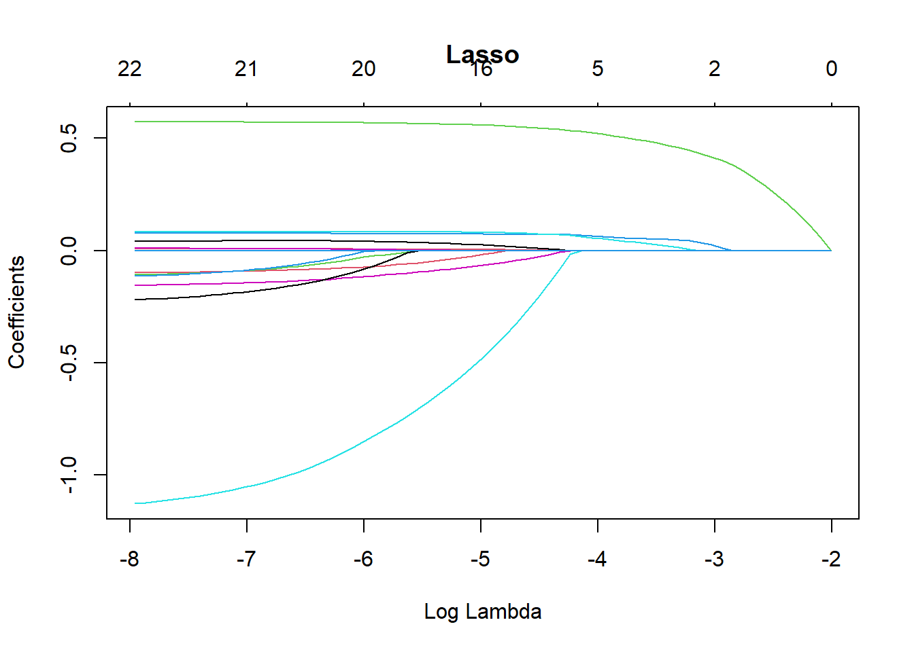
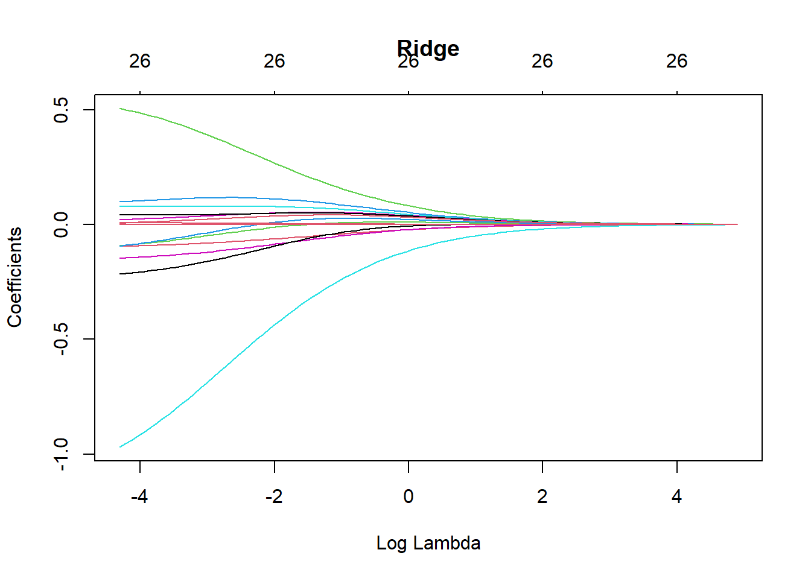
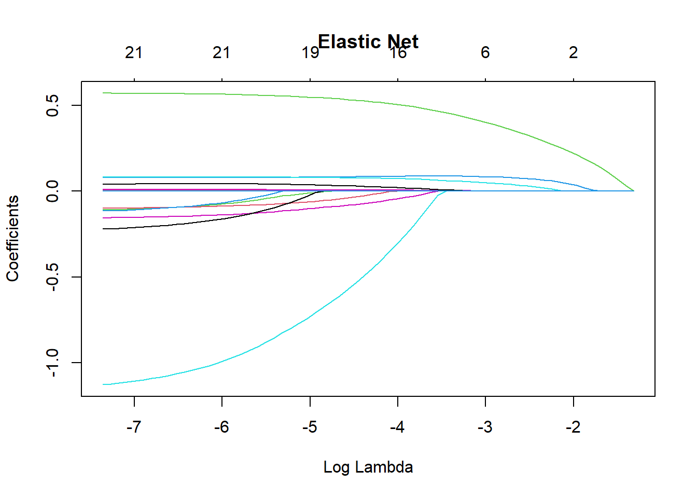
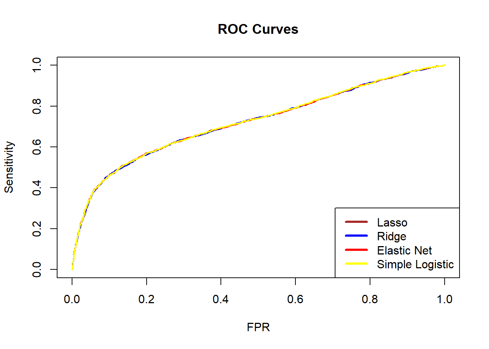

library(readxl) # read Excel files
library(tidyverse) # data manipulation
library(glmnet) # shrinkage models
library(caret) # modelling framework
library(e1071)
library(PRROC) # ROC / AUC
library(doParallel) # parallel computing
library(Rcpp)
library(MASS)Lab: Modelling and Shrinkage Techniques
Actuarial Data Science - Open Learning Resource
Learning Objectives
Understand how to build logistic regression models with shrinkage techniques, such as lasso, ridge, and elastic net, to predict whether clients will default.
Understand how to select the optimal regularisation parameter for shrinkage techniques.
Use evaluation metrics to compare the predictive performance of different models on the test set.
Introduction
In this lab, we use the credit data of credit card clients in Taiwan to predict whether a client will default. The dataset contains information on customers’ default payments and includes 30,000 observations described by 24 attributes. It covers default payments, demographic factors, credit data, repayment history, and bill statements from April 2005 to September 2005.
In credit lending, risk arises from two sources: the potential loss from rejecting good clients, and the financial loss from approving clients who are at high risk of default.
Tasks for this Lab
Use the code below to start building a logistic regression model without any shrinkage techniques.
Build logistic regression models with lasso, ridge, and elastic net penalties. Hint: Use
cv.glmnet()to find the optimal regularisation parameter.Compare the predictive performance of all four models on the test set.
Assess whether the data are balanced. If not, implement appropriate data balancing techniques and examine whether performance improves.
Models Details
Logistic Regression
Logistic regression can be considered a special case of linear models for classification. A logistic regression model specifies that a transformation of the probability of an event is a linear function of the explanatory variables. The main advantage of this approach is that it provides a simple probabilistic model for classification. However, logistic regression may not perform well when there are strong non-linear relationships or complex interactions between explanatory variables.
Under logistic regression, the predicted probability is modelled using the logit link function. Specifically, the probability is given by:
\mathbb{P}(Y = 1 \mid X = x) = \frac{1}{1 + \exp\left(-\sum_{j=1}^{p} x_{ij} \beta_j \right)}.
We estimate \beta by minimising the negative log-likelihood (equivalently, maximising the log-likelihood). The objective function is:
\mathcal{L} = -\sum_{i=1}^{N} \left[ y_i \log\big(\mathbb{P}(Y_i = 1 \mid X_i)\big) + (1 - y_i)\log\big(1 - \mathbb{P}(Y_i = 1 \mid X_i)\big) \right],
where N is the number of observations.
Ridge Penalty
Ridge regression is useful when all features are believed to be relevant for predicting the response. It shrinks all coefficients towards zero using a tuning parameter \lambda, but does not set any coefficients exactly to zero.
Ridge estimates the coefficients by minimising:
\widehat{\beta} = \arg\min_{\beta} \left\{ \mathcal{L} + \lambda \sum_{j=1}^{p} \beta_j^2 \right\}. where p is the number of features.
Lasso Penalty
The lasso penalty introduces a tuning parameter \lambda that controls the degree of shrinkage applied to the coefficients. When \lambda is appropriately chosen (typically via cross-validation), it can reduce the generalisation error. Unlike ridge regression, lasso can shrink some coefficients exactly to zero (i.e., when \lambda is sufficiently large), resulting in a sparse and more interpretable model.
Lasso estimates the coefficients by minimising:
\widehat{\beta} = \arg\min_{\beta} \left\{ \mathcal{L} + \lambda \sum_{j=1}^{p} |\beta_j| \right\}.
Elastic Net Penalty
The elastic net penalty can be used to retain or remove correlated features jointly. It combines the \ell_1 and \ell_2 penalties of lasso and ridge, respectively:
\widehat{\beta} = \underset{\beta}{\operatorname{argmin}} \; \mathbb{L} + \lambda_1 \sum_{j=1}^{p} |\beta_j| + \lambda_2 \sum_{j=1}^{p} \beta_j^2. \tag{1}
The elastic net can produce a sparse model depending on the choices of \lambda_1 and \lambda_2.
Model Evaluation
We use the area under the receiver operating characteristic curve (\text{AUC}) to evaluate the models in this case study. The receiver operating characteristic (ROC) curve illustrates the performance of a classification model across all classification thresholds. It plots the true positive rate (TPR) against the false positive rate (FPR).
Lowering the classification threshold classifies more observations as positive, which increases both true positives and false positives.
The \text{AUC} measures the total area under the ROC curve, ranging from (0,0) to (1,1). A higher AUC indicates better overall classification performance in distinguishing between defaulters and non-defaulters.
Loading the Required Packages
We load several packages required for this analysis. The package readxl is used to read Excel data files (with the .xls extension). The package PRROC is used to compute the Area Under the Curve (AUC), while the package caret provides functions for data splitting and for fitting classification and regression models with a wide range of tuning options. The package corrplot can be used to visualise correlations between numeric features. The tidyverse collection is used for data manipulation, and glmnet is used to fit shrinkage models. The package doParallel enables parallel computing, although its use is optional.
Import Data
# Read Excel file
Raw_credit <- as.data.frame(read_excel("credit.xls", skip = 1))
credit <- Raw_creditData Preparation
We prepare the data for modelling the probability of default. This involves renaming variables, handling data issues, converting variables to appropriate formats, and preparing the dataset for model fitting
# Rename columns
colnames(credit)[7] <- "PAY_1"
colnames(credit)[25] <- "default"
# Remove the customer index
credit <- credit[, -1]
# Fix data issues (similar to earlier preprocessing steps)
credit$MARRIAGE[credit$MARRIAGE == 0] <- 3
credit$EDUCATION[credit$EDUCATION %in% c(0, 5, 6)] <- 4
# Convert categorical variables to factors
# (PAY variables are kept numeric as they may cause issues when treated as factors)
credit[, c(2:4, 24)] <- lapply(credit[, c(2:4, 24)], FUN = factor)
# Factors: SEX, EDUCATION, MARRIAGE, defaultData Splitting
The data are split into training and test sets for model evaluation. The training set is used to build the model, while the test set is used to assess its predictive performance. The dataset is divided into 70% training data and 30% test data.
We can perform this split using either the createDataPartition() function from the caret package or the base R function sample().
set.seed(1) # different seeds will lead to different splits
index <- sample(1:length(credit$LIMIT_BAL), 0.7 * length(credit$LIMIT_BAL))
# index <- createDataPartition(credit$default, p = 0.7, list = FALSE) # alternative method
mean(credit$default == 1)
# Training data
x_train <- credit[index, -24] # predictors
y_train <- credit[index, 24] # response
Data_train <- credit[index, ]
# Test data
x_test <- credit[-index, -24] # predictors
y_test <- credit[-index, 24] # response
Data_test <- credit[-index, ]Modelling
Predicting Using Shrinkage Methods
We train three shrinkage methods, namely lasso, ridge, and elastic net regressions, on the training dataset using cross-validation. The fitted models are then used to predict whether a client is credible or not credible.
Take note of the transformations applied to the data here, as different models and functions may require the data in different formats. Understanding these transformations is important.
# We use glmnet() to apply lasso, ridge, and elastic net penalties,
# so we first transform the predictors and response into matrix format.
# In matrix format, factor variables are automatically expanded into dummy variables.
x_train_matrix <- model.matrix(~ ., x_train)
# model.matrix(): creates a matrix and expands factors into dummy variables
y_train_matrix <- as.matrix(y_train)
# Note that the test set should NOT be used during model training.
x_test_matrix <- model.matrix(~ ., x_test)
y_test_matrix <- as.matrix(y_test)We use 10-fold cross-validation to find the optimal regularisation parameter (\lambda).
# Run cross-validation to find the optimal regularisation parameter (lambda)
# alpha = 1 : lasso penalty
# alpha = 0 : ridge penalty
# alpha = 0.5 : elastic net penalty
# Start parallel computing
cl <- makeCluster(detectCores() - 1)
# Detect available CPU cores
registerDoParallel(cl)
# Enable parallel computing to speed up cross-validation
# Lasso penalty
CV_lasso <- cv.glmnet(
x_train_matrix,
y_train_matrix,
family = "binomial",
type.measure = "auc",
alpha = 1,
nfolds = 10,
parallel = TRUE
)
# Ridge penalty
CV_ridge <- cv.glmnet(
x_train_matrix,
y_train_matrix,
family = "binomial",
type.measure = "auc",
alpha = 0,
nfolds = 10,
parallel = TRUE
)
# Elastic net penalty
CV_EN <- cv.glmnet(
x_train_matrix,
y_train_matrix,
family = "binomial",
type.measure = "auc",
alpha = 0.5,
nfolds = 10,
parallel = TRUE
)
# End parallel computing
# (important, otherwise R sessions may behave unexpectedly)
stopCluster(cl)
# We also fit a logistic regression model without shrinkage.
# Note that glm() uses formula input rather than matrix input.
LogisticModel <- glm(default ~ ., family = "binomial", data = Data_train)Different penalties affect how the regularisation parameter (\lambda) shrinks the coefficients (\beta). The following plots illustrate how the coefficient estimates change as \lambda varies under different penalties.
Notes on
cv.glmnet() Parameters
family = "binomial"specifies that this is a binary classification problem.type.measure = "auc"uses the Area Under the Curve (AUC) to determine the optimal regularisation parameter \lambda.alpha = 1corresponds to the lasso penalty.alpha = 0corresponds to the ridge penalty.alpha = 0.5corresponds to the elastic net penalty.parallel = TRUEenables parallel computing to speed up the cross-validation process.
plot(CV_lasso$glmnet.fit, xvar = "lambda", main = "Lasso")
plot(CV_ridge$glmnet.fit, xvar = "lambda", main = "Ridge")
plot(CV_EN$glmnet.fit, xvar = "lambda", main = "Elastic Net")
Using the Fitted Models to Make Predictions on the Test Set
The following code shows how to use the fitted models to predict default probabilities on the test set.
# Make predictions using the optimal lambda selected by 10-fold CV:
# s = CV_lasso$lambda.min
# type = "response" returns predicted probabilities
prediction_lasso <- predict(
CV_lasso,
s = CV_lasso$lambda.min,
newx = x_test_matrix,
type = "response"
)
prediction_ridge <- predict(
CV_ridge,
s = CV_ridge$lambda.min,
newx = x_test_matrix,
type = "response"
)
prediction_EN <- predict(
CV_EN,
s = CV_EN$lambda.min,
newx = x_test_matrix,
type = "response"
)
prediction_Logistic <- predict(
LogisticModel,
newdata = Data_test,
type = "response"
)Models Comparison
You can plot the ROC curves of the different models in the same figure. We can see that the ROC curves of the four models are similar and close to each other, indicating that the four models have similar predictive performance when measured by ROC.
ROC_lasso <- PRROC::roc.curve(
scores.class0 = prediction_lasso,
weights.class0 = as.numeric(Data_test$default) - 1,
curve = TRUE
)
ROC_ridge <- PRROC::roc.curve(
scores.class0 = prediction_ridge,
weights.class0 = as.numeric(Data_test$default) - 1,
curve = TRUE
)
ROC_EN <- PRROC::roc.curve(
scores.class0 = prediction_EN,
weights.class0 = as.numeric(Data_test$default) - 1,
curve = TRUE
)
ROC_Logistic <- PRROC::roc.curve(
scores.class0 = prediction_Logistic,
weights.class0 = as.numeric(Data_test$default) - 1,
curve = TRUE
)
plot(ROC_lasso, color = "brown", main = "ROC Curves", auc.main = FALSE, lwd = 2)
plot(ROC_ridge, color = "blue", add = TRUE, lwd = 2)
plot(ROC_EN, color = "red", add = TRUE, lwd = 2)
plot(ROC_Logistic, color = "yellow", add = TRUE, lwd = 2)
legend(
"bottomright",
legend = c("Lasso", "Ridge", "Elastic Net", "Simple Logistic"),
lwd = 3,
col = c("brown", "blue", "red", "yellow")
)
We can also compare the AUC values of the four models. A larger AUC suggests better predictive performance. In this case, the simple logistic regression model has the highest AUC.
ROC_lasso$auc #Lasso[1] 0.7215665ROC_ridge$auc #Ridge[1] 0.7209229ROC_EN$auc #EN[1] 0.7215649ROC_Logistic$auc #simple logistic [1] 0.722072Besides ROC and AUC, there are many other evaluation metrics that can be used for a binary classification problem. To check these metrics, we can use the following code to obtain the confusion matrix for each model. For example, the logistic regression with lasso penalty has the following performance.
Generally speaking, there is no single metric that works well in all cases. Different models may perform well according to one metric but less well according to another. Therefore, we should choose evaluation metrics carefully according to the business context and modelling objectives.
PredClass_lasso <- as.integer(prediction_lasso > 0.5)
PredClass_ridge <- as.integer(prediction_ridge > 0.5)
PredClass_EN <- as.integer(prediction_EN > 0.5)
PredClass_Logistic <- as.integer(prediction_Logistic > 0.5)
ConfuMatrix_lasso <- confusionMatrix(
as.factor(PredClass_lasso),
Data_test$default,
positive = "1"
)
ConfuMatrix_ridge <- confusionMatrix(
as.factor(PredClass_ridge),
Data_test$default,
positive = "1"
)
ConfuMatrix_EN <- confusionMatrix(
as.factor(PredClass_EN),
Data_test$default,
positive = "1"
)
ConfuMatrix_Logistic <- confusionMatrix(
as.factor(PredClass_Logistic),
Data_test$default,
positive = "1"
)
ConfuMatrix_lassoConfusion Matrix and Statistics
Reference
Prediction 0 1
0 6838 1556
1 159 447
Accuracy : 0.8094
95% CI : (0.8012, 0.8175)
No Information Rate : 0.7774
P-Value [Acc > NIR] : 5.984e-14
Kappa : 0.2669
Mcnemar's Test P-Value : < 2.2e-16
Sensitivity : 0.22317
Specificity : 0.97728
Pos Pred Value : 0.73762
Neg Pred Value : 0.81463
Prevalence : 0.22256
Detection Rate : 0.04967
Detection Prevalence : 0.06733
Balanced Accuracy : 0.60022
'Positive' Class : 1
Think about which metric is suitable for this credit card default study. A bank may suffer a substantial loss if clients default. Hence, we are more interested in how well the models identify defaulters (class 1, not class 0), who form the minority class. In this case, sensitivity is usually important, as it measures how many true defaulters are correctly classified as defaulters. Use the code above to check which model has the highest sensitivity.
Balancing
It is important to check whether the data are balanced. If not, implementing data balancing techniques could be beneficial. Subsampling methods can be broadly categorised into:
Down-sampling:
Randomly reduce the size of the majority class so that all classes have the same frequency as the minority class. This can be implemented using thedownSamplefunction from thecaretpackage.Up-sampling:
Randomly sample (with replacement) from the minority class to match the size of the majority class. This can be implemented using theupSamplefunction from thecaretpackage.Hybrid methods:
Methods such as SMOTE and ROSE combine over-sampling and under-sampling. They both reduce the size of the majority class and generate synthetic observations for the minority class.
However, data balancing should not be applied blindly. It should be treated as part of the modelling process rather than the data validation process, and we should check whether model performance improves after balancing is applied.
In this dataset, defaulters account for 22.12% of the observations, so the data are imbalanced. In this lab, we use the up-sampling method (upSample() from the caret package) to make the number of defaulters equal to the number of non-defaulters. The code below shows the class counts before and after up-sampling.
table(Data_train$default)
0 1
16367 4633 set.seed(2023)
Balanced_train <- upSample(
x = Data_train[, -24],
y = Data_train$default
)
table(Balanced_train$Class)
0 1
16367 16367 Balanced_x <- Balanced_train[, -24]
Balanced_y <- Balanced_train[, 24]
x_balanced_matrix <- model.matrix(~ ., Balanced_x)
y_balanced_matrix <- as.matrix(Balanced_y)
cl <- makeCluster(detectCores() - 1)
registerDoParallel(cl)
# Lasso penalty
CV_lasso_balanced <- cv.glmnet(
x_balanced_matrix,
y_balanced_matrix,
family = "binomial",
type.measure = "auc",
alpha = 1,
nfolds = 10,
parallel = TRUE
)
# Ridge penalty
CV_ridge_balanced <- cv.glmnet(
x_balanced_matrix,
y_balanced_matrix,
family = "binomial",
type.measure = "auc",
alpha = 0,
nfolds = 10,
parallel = TRUE
)
# Elastic net penalty
CV_EN_balanced <- cv.glmnet(
x_balanced_matrix,
y_balanced_matrix,
family = "binomial",
type.measure = "auc",
alpha = 0.5,
nfolds = 10,
parallel = TRUE
)
# End parallel computing
stopCluster(cl)
LogisticModel_balanced <- glm(
Class ~ .,
family = "binomial",
data = Balanced_train
)Then, we use the balanced training data to fit four models again and used them to make predictions in the test set.
# Predictions using the balanced models
prediction_lasso_balanced <- predict(
CV_lasso_balanced,
s = CV_lasso_balanced$lambda.min,
newx = x_test_matrix,
type = "response"
)
prediction_ridge_balanced <- predict(
CV_ridge_balanced,
s = CV_ridge_balanced$lambda.min,
newx = x_test_matrix,
type = "response"
)
prediction_EN_balanced <- predict(
CV_EN_balanced,
s = CV_EN_balanced$lambda.min,
newx = x_test_matrix,
type = "response"
)
prediction_Logistic_balanced <- predict(
LogisticModel_balanced,
newdata = Data_test,
type = "response"
)
ROC_lasso_balanced <- PRROC::roc.curve(
scores.class0 = prediction_lasso_balanced,
weights.class0 = as.numeric(Data_test$default) - 1,
curve = TRUE
)
ROC_ridge_balanced <- PRROC::roc.curve(
scores.class0 = prediction_ridge_balanced,
weights.class0 = as.numeric(Data_test$default) - 1,
curve = TRUE
)
ROC_EN_balanced <- PRROC::roc.curve(
scores.class0 = prediction_EN_balanced,
weights.class0 = as.numeric(Data_test$default) - 1,
curve = TRUE
)
ROC_Logistic_balanced <- PRROC::roc.curve(
scores.class0 = prediction_Logistic_balanced,
weights.class0 = as.numeric(Data_test$default) - 1,
curve = TRUE
)
Questions:
Now, check the sensitivity of the four models again and discuss the results. Is the simple logistic regression still the best model?
Discuss your findings with your classmates and tutors.
PredClass_lasso_balanced <- as.integer(prediction_lasso_balanced > 0.5)
PredClass_ridge_balanced <- as.integer(prediction_ridge_balanced > 0.5)
PredClass_EN_balanced <- as.integer(prediction_EN_balanced > 0.5)
PredClass_Logistic_balanced <- as.integer(prediction_Logistic_balanced > 0.5)
ConfuMatrix_lasso_balanced <- confusionMatrix(
as.factor(PredClass_lasso_balanced),
Data_test$default,
positive = "1"
)
ConfuMatrix_ridge_balanced <- confusionMatrix(
as.factor(PredClass_ridge_balanced),
Data_test$default,
positive = "1"
)
ConfuMatrix_EN_balanced <- confusionMatrix(
as.factor(PredClass_EN_balanced),
Data_test$default,
positive = "1"
)
ConfuMatrix_Logistic_balanced <- confusionMatrix(
as.factor(PredClass_Logistic_balanced),
Data_test$default,
positive = "1"
)Conlusion
Please explore the code and examine how the results change when you modify the inputs. In practice, you will usually need to make class predictions, so it is important to consider how predicted probabilities are converted into classes.
An important choice is the classification threshold. In this lab, we used a threshold of 50%, but this can be adjusted depending on the business context and modelling objective. In a default detection problem, false negatives are often more costly than false positives. Therefore, it may be preferable to lower the threshold (for example, to 25%) to identify more potential defaulters. The ROC curve can help guide the choice of an appropriate threshold.